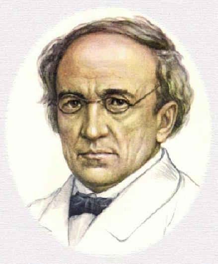

Я встретил вас — и все былое
В отжившем сердце ожило;
Я вспомнил время золотое —
И сердцу стало так тепло…
Как поздней осени порою
Бывают дни, бывает час,
Когда повеет вдруг весною
И что-то встрепенется в нас,-
Так, весь обвеян дуновеньем
Тех лет душевной полноты,
С давно забытым упоеньем
Смотрю на милые черты…
Как после вековой разлуки,
Гляжу на вас, как бы во сне,-
И вот — слышнее стали звуки,
Не умолкавшие во мне…
Тут не одно воспоминанье,
Тут жизнь заговорила вновь,-
И то же в вас очарованье,
И та ж в душе моей любовь!..